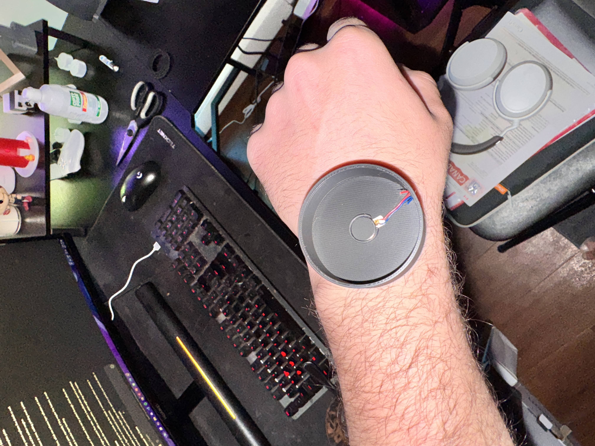
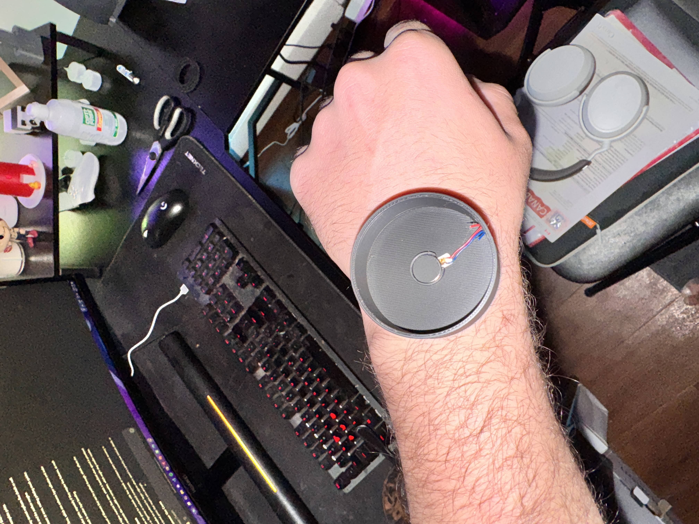

Concept
 


The concept behind PulseLink Bracelets focuses on enhancing emotional connection through tactile interaction. By using a simple press of the sensor on one bracelet, a signal is transmitted to the paired bracelet, creating a gentle buzz. This minimalist design fosters an intuitive and immediate response, making it a creative tool for staying in touch. The use of ESP-NOW ensures a low-latency connection, reinforcing the real-time experience of the interaction.
The bracelets are housed in custom-designed, 3D-printed casings made of lightweight and durable material. The ergonomic design ensures that the bracelets are comfortable to wear for extended periods while securely housing the electronics. The curved design of the casing follows the natural shape of the wrist, while strategically placed openings allow for easy access to the force sensor and buzzer components.